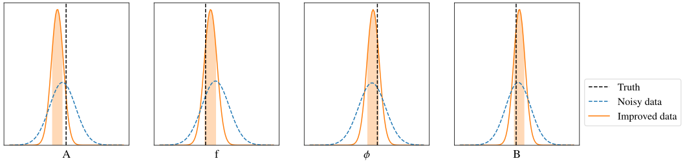
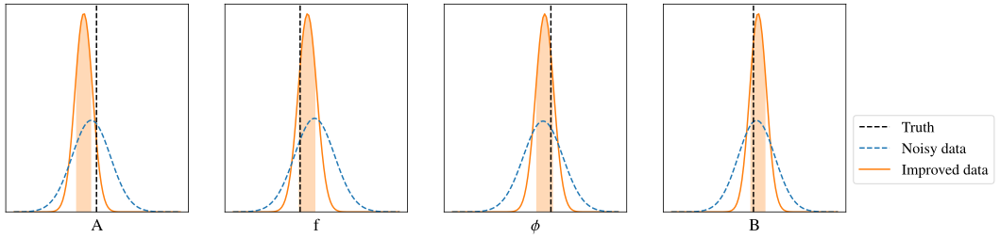
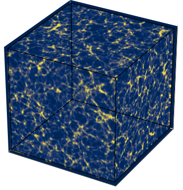

Advancing cosmological field-level inference
with physics-informed Bayesian neural networks
PhD defense, Institut d'Astrophysique de Paris, 30.01.2025
Simon Ding
supervised by Guilhem Lavaux (IAP) & Jens Jasche (Stockholm University)
Cosmology
Goal: Understand the nature of our Universe
Method:
- Observe celestial objects around us (Data)
- Compare data against our theoretical predictions
(Modelling & Inference)
Data in Cosmology
- Galaxy clustering
- Galaxy lensing
- Cosmic Microwave Background
- Voids
- $\dots$
Modelling in Cosmology
The current concordance model is called $\Lambda$CMD
Modelling in Cosmology
- $\Lambda$CDM model is charaterised by cosmological parameters $\theta$
e.g. $\Omega_{\mathrm b}, \Omega_{\mathrm m}, n_{\mathrm s}, A_{\mathrm s}, \dots$ - Physics is encoded in these parameters
Inferring cosmological parameters equates to learning
about the physics of our Universe
Bayesian Inference
Given some observational data, we want to
derive sensible cosmological parameters $\theta$
⇒ Solve for $P(\theta|\text{data})$
Bayesian Inference — An example
Bayesian Inference — An example
- Recorded light intensity at different times $I(t_{\text{obs}})$
- Theoretical model: $I'(t)\,$$=\,$$A$$\,\sin(2\pi$$f$$t +\,$$\phi$$)+\,$$B$$\,+\,n$
- Simple additive Gaussian noise ⇒ $P(\text{data}|\theta,\eta)=\,$$\mathcal{N}((I' - I), \sigma^2)$
Target & nuisance
parameters $\theta$$\,+\,$$\eta$
⟶
Make prediction $\text{data}' = \text{Model}(\theta,\eta)$
⟶
Compare to data
with $P(\text{data}|\theta,\eta)$
⟶
Bayesian Inference — An example

- Our understanding of the Universe is encoded in
our theoretical models and its parameters - We may gain new insights by inferring the values
of these cosmological parameters through observations
Inferred parameters $\theta$
⟶
Cosmological model
e.g. $\Lambda$CDM$(\theta)$
⟶
Observational data
e.g. galaxy surveys
⟶
Advancing
cosmological
field-level
inference
with
physics-informed
Bayesian neural networks
Advancing
cosmological
inference

$\Lambda$CDM is great but, many central questions remain open:
- Nature of dark matter & dark energy
- Modified gravity
- ...
⇒ Need for robust and improved parameter constraints
e.g. Perivolaropoulos & Skara (2022), Efstathiou (2024)
The canonical approach to cosmological inference


Compression will reduce information content of data


⇒ Switch to
field-level inference
Field-level inference
Model the full cosmic field to
maximise the information,
extracted from the data
Leclerq & Heavens (2021)
Field-level inference from galaxy surveys with $\texttt{BORG}$

Lavaux & Jasche (2016), Jasche & Lavaux (2019)
Sampling $\sim 2.1\times 10^6$ parameters with Hamiltonian Monte Carlo (HMC) method
New (big) data sets are coming in through e.g. Euclid, DESI, LSST, ...
⇒ Need to adapt our data model
Example inference with more observations and better sensitivity

 

Noise is actually more complex:
$\sigma = \sigma_{\text{sky}} + \sigma_{\text{ant}} + \sigma_{\text{heat}} t$
Simple noise model will bias results
More (nuisance) parameters needed


What about numerical ($N$-body) simulations?
e.g. Euclid flagship simulation, Quijote (Villaescusa-Navarro, et al. 2020),
Abacus (Garrison, et al. 2017)
- Most accurate cosmological modelling method available
- BUT: Very expensive to run! (~ millions of CPU hours)
- Inference need many forward evaluations (~ millions)
New (big) data sets are coming in through e.g. Euclid, DESI, LSST, ...
Challenge: Accurate and efficient data modelling
- Non-trivial dynamics on small scales
- Maintain computational performance on large survey volumes
- New (unknown) systematics
- ...
⇒ Modern cosmology will become systematics-limited research field
Leverage machine learning as a new modelling approach
⇒ Neural networks as universal function approximators
However
- Need enough training examples
- No intrinsic error estimation
⇒ Integrate as Bayesian neural networks
New (big) data sets are coming in through e.g. Euclid, DESI, LSST, ...
Challenge: How to incorporate more flexible models?
e.g. Bayesian neural networks
We only have one Universe!
→ Data unable to constrain both physics and nuisance parameters
Possible solutions:
- Models with reduce parameter space
- Use better (behaved) priors $P(\theta)$
$\texttt{PineTree}$
(Physical and Interpretable NEtworks for TRacEr Emulation)
Ding, Lavaux, Jasche (2024);
ArXiv: 2407.01391
Ding, Lavaux, Jasche (2025), in prep.
Field-Level inference from Galaxy surveys with BORG
Lavaux & Jasche (2016), Jasche & Lavaux (2019)
Bias model
Modelling $\delta_m(x) \rightarrow n\big(M|\delta_m(x)\big)$ is challenging!
⇒ Simplify to "dark matter only" universe (for now)
Field-Level inference from Galaxy surveys with BORG

Lavaux & Jasche (2016), Jasche & Lavaux (2019)
Consider only dark matter: $\delta_{\rm m}(x) \rightarrow n_{\rm h}\big(M|\delta_{\rm m}(x)\big)$
Benchmark new model
- Train as traditional neural network
- Compare model predictions against $N$-body simulations
- Optimise computational efficiency
A physics-informed neural bias model
over-density field
+
physical contraints
halo catalogues
From approximate gravity solvers
i.e. 2LPT, COLA (Tassev et al. 2013)
- fast (GPU support)
- differentiable
- Stochastic
- Explainable
- 17-32 parameters
Validated via:
- Halo mass function
- Power spectrum
- Bispectrum
Likelihood assumption
• Use isotropy
(Mixture Density Network)
 ⇒
⇒
⇒
$\delta_{\rm m}(x)$ → Convolve → Transform → Sample → $n_{\rm h}\big(M|\delta_{\rm m}(x)\big)$

Benchmark — Setup
- Optimise using Poisson likelihood
- 10 halo catalogues at $z=\{ 0, 1 \}$ from L-Gadget + rockstar
- Corresponding 2LPT overdensity fields
- $L_{\rm box} = 500\,h^{-1}\rm{Mpc}$
- $M_{\rm{vir}} > 2 \times 10^{12}\,h^{-1}M_{\odot}$
- Validate on unseen simulations

Conditional halo mass function
Cross-correlation coefficient

On model interpretability — kernel weights

for $L_{\rm voxel} = 7.81\,h^{-1}\rm{Mpc}$

$\texttt{PineTree}$ as Bayesian neural network
- Test inference on mock data
- Network parameters are directly sampled
Parameter samples:

What went
wrong?
Common issues — Bayesian Neural networks
- Scaling degeneracies
- e.g. $x_{i} = f(x_{i-1}) = \omega_{i}x_{i-1} + b_i$
- Re-parameterise:
⇒ Yields equivalent output $x_i$ for any $\kappa$
Common issues — Bayesian Neural networks
- Scaling degeneracies
- Improper priors due to activation functions
- e.g. $u\equiv\text{softplus}(x) = \ln\left( 1 + e^x \right)$ with $P_x(x) = \text{const.}$
$u$ not uniformly distributed anymore: $$ P_u(u) = P_x(x)\left|\frac{\mathrm{d}x}{\mathrm{d}u}\right| = P_x(x) \frac {1}{1 - e^{-u}} $$
Common issues — Bayesian Neural networks
- Scaling degeneracies
- Improper priors due to activation functions
Degeneracies can be identified & fixed
thanks to the reduced parameter space
- Removed 3 degenerate
parameters - Added inverse Jacobian
to adjust prior
Joint inference in $\texttt{BORG}$ stable

Intermediate Summary
• Generative model for LARGE (Euclid-like) volumes
• Differentiable & fast ( ~10min to simulate a $3\,h^{-1}\,\mathrm{Gpc}$ box)
• Robust & interpretable model
• Modular GPU-accelerated implementation
• Reduced number of weights
⇒ Direct inference of model parameters possible
$\texttt{Robin-Pip}$
(RObust Bayesian INference with Physics-Informed Priors)
Ding, Doeser, Lavaux, Jasche (2025), in prep.
Field-Level inference from Galaxy surveys with BORG
Lavaux & Jasche (2016), Jasche & Lavaux (2019)
$\texttt{PineTree}$
Neural network
Parameter space is highly degenerate
Can we pick better priors?
physics informed priors from simulations
 $$=$$
$$=$$


⇒ New constraint from simulations $y = \frac{P_{\rm m}(k)}{P_{\rm h}(k)}$
Note: Any summary statistic other than power spectrum may be used
physics informed priors from simulations
Conditional independent constraint $y\,$: $P(\text{data}|y) = P(\text{data})$
\[ \begin{aligned} P(\theta|\text{data}, y) & = \frac{P(\text{data}, y|\theta)P(\theta)}{P(\text{data})} \\ & = \frac{P(\text{data}|\theta)}{P(\text{data})} \frac{P(y|\theta)P(\theta)}{P(y)} = \frac{P(\text{data}|\theta)P(\theta|y)}{P(\text{data})} \\ & \propto P(\text{data}|\theta)P(y|\theta)P(\theta) \phantom{\frac{P(\text{data}, y|\theta)P(\theta)}{P(\text{data})}} \end{aligned} \]
Field-Level inference from Galaxy surveys with BORG
Lavaux & Jasche (2016), Jasche & Lavaux (2019)
Robin-PiP
Bias model
Use self-consistent simulations & mock observables

Forward model setup
- LPT gravity solver
- Truncated power law as bias model
- Inference on mock halo data
- Two inference scenarios:
- No priors on bias parameters
- Uniform priors on bias parameters
Inference scenario 1


- Inference algorithm cannot distinguish
between statistically plausible solutions - $\texttt{Robin-Pip}$ allows only physically plausible solutions
Inference scenario 2


Summary
Physics-informed neural bias $\texttt{PineTree}$
- Reduce parameter space through e.g. symmetries
- Computationally efficient & differentiable
- Direct model parameter inference possible
Physics-informed priors $\texttt{Robin-PiP}$
- Principled way of incorporating simulations into inference
- Model agnostic
- Can robustify overparameterized models
Outlook
...
Back-up slides
Log-Normal mixture network
$$n_j\big(M|\boldsymbol{\psi_j}\big) = \frac{\bar{N}_j}{V} \sum_{i}^{N} \frac{\alpha_{ij}}{M} \mathcal{N}(\log M |\, \mu_{ij},\sigma_{ij})$$
$\bar{N}_j = \exp\left[\omega^{\bar{N}}\boldsymbol{\psi_j} + b^{\bar{N}} \right]$
$\alpha_{ij} = \text{softmax}(w_i^\alpha\boldsymbol{\psi_j} + b_i^\alpha)$
$\mu_{ij} = \begin{cases} w_i^\mu\boldsymbol{\psi_j} + b_i^\mu &\text{if $i = 0$}\\ \text{max}\big[ w_i^\mu\boldsymbol{\psi_j} + b_i^\mu \big] + \mu_{i-1} &\text{if $ i > 0$} \end{cases}$
$\sigma_{ij} = \exp\left[w_i^\sigma\boldsymbol{\psi_j} + b_i^\sigma\right]$
Sampling
$n_j\big(M|\boldsymbol{\psi_j}\big) = \frac{\bar{N}_j}{V} \mathcal{P}(M|\boldsymbol{\psi_j}, \boldsymbol{w}) = $ $\frac{\bar{N}_j}{V} \sum_{i}^{N} \frac{\alpha_{ij}}{M} \mathcal{N}(\log M |\, \mu_{ij},\sigma_{ij})$
$\langle N_{\text{halo}}\rangle_j = \bar{N}_j$ is Poisson
$N_j\curvearrowleft \mathcal{P}_{\rm Poiss.}(\lambda_j = \bar{N}_j)$ ⟶ $\{M_j\} \curvearrowleft \sum_{i}^{N} \frac{\alpha_{ij}}{M} \mathcal{N}(\log M |\, \mu_{ij},\sigma_{ij})$